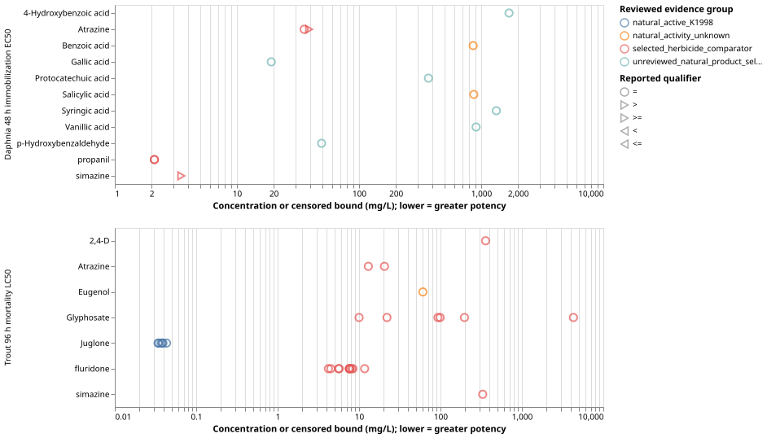
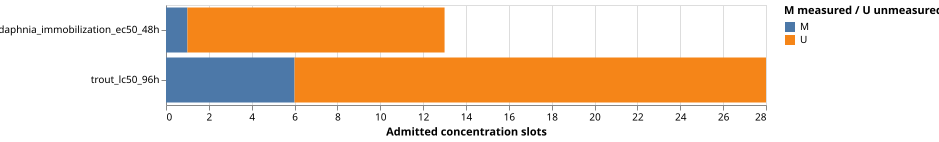

All 104 frozen mappings are approved by the research lead. Source records, values, units and policies are unchanged: 79,171 native results and 79,302 concentration slots.
daphnia_immobilization_ec50_48h: 13 slots across 11 compounds; trout_lc50_96h: 28 slots across 7 compounds. These are ecological endpoints, separate from rat oral LD50. Each observation retains its source, qualifier and exposure context. Slots are not independent experiments.


Compound summaries stay within policy, measured/unmeasured analysis, concentration basis, formulation, exposure type, medium and exposure duration. Only exact observations enter a record median. Bounds remain separate. Different source result IDs are preserved; no duplicate-report decisions were approved.
Sensitivity scenarios exclude unresolved overlap candidates and/or require reported control type, exposure type and matching exposure/observation duration. Reported fields do not establish study quality. Empty subsets remain empty.
16 rat LD50 records remain in a source-context review queue. Identity approval does not establish acute-study context or resolve body-weight/acid-equivalent unit semantics. No records are added to the historical 43 exact / 25 censored observations or 34 compound medians; 1,080/3,400 mg/kg cutoffs stay frozen.